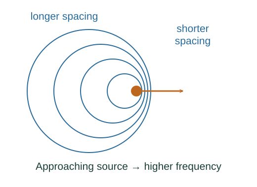

Derive the sound Doppler formula
Source motion changes crest spacing in the medium. Observer motion changes how quickly those crests are encountered. These are separate effects for sound because the medium defines a rest frame.
What the symbols mean
v: sound speed relative to the medium; usource: source speed toward observer; uobserver: observer speed toward source; fsource: emitted frequency.
When this applies
Collinear motion, stationary homogeneous medium, constant subsonic source speed, and positive closing-speed conventions as defined here.
Developing the argument

Track two successive emissions
The source emits crests a period Ts = 1/fs apart. In that time the first crest moves vTs while the source moves usourceTs toward it.
Convert spacing to frequency at rest
A stationary observer meets crests at rate v/λahead. The shortened spacing makes an approaching source sound higher.
Let the observer approach
The crest–observer closing speed is v + uobserver. Divide this encounter speed by the spacing to obtain the arrival rate.
Substitute and check the limit
Replacing λahead gives the stated formula. With both velocities zero the observed and emitted frequencies agree. For receding motion use a negative value for the corresponding defined closing speed.
A worked example
With sound speed 340 m/s, an approaching 20 m/s source emitting 500 Hz is heard by a stationary listener at 500 × 340/320 = 531 Hz.
Derivation behind this calculation ↗A point to keep straight
This is the sound formula in a medium, not the relativistic light Doppler formula. At sonic source speeds a shock-wave treatment is needed.
Check the assumptions and derivation ↗